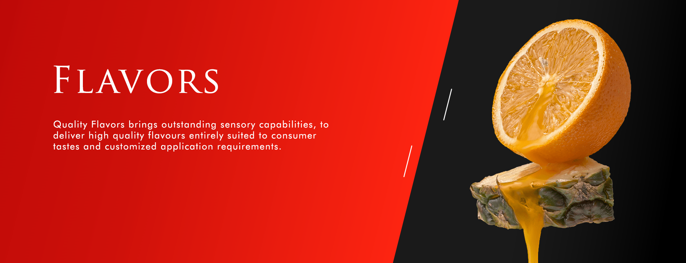
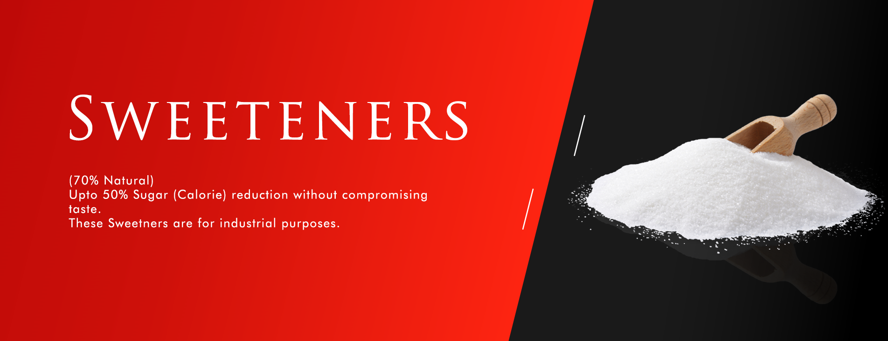
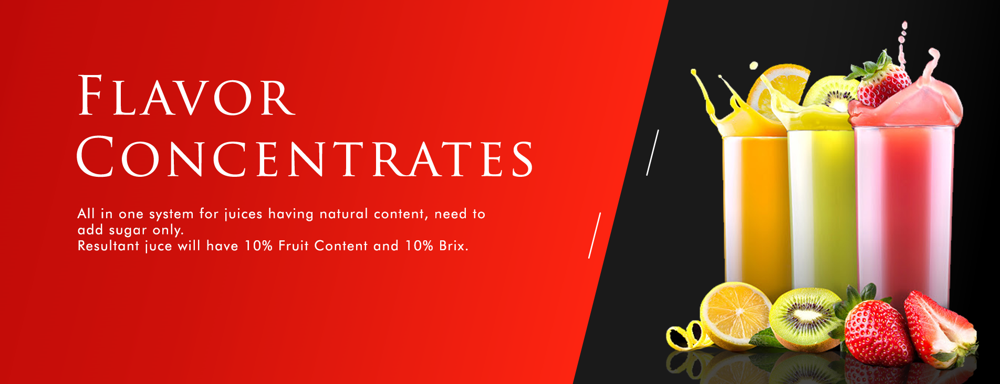

I might be stating the obvious but if you want a creamy cake, make sure you use a store-bought CREAMY vegan ice cream! But why does it matter?! Berries have a high water content so when berry puree is mixed with ice cream, the berries crystalize and makes the ice cream a little icier than normal. So you need a high-fat creamy ice cream to balance out the water content of the berries. As a result, this homemade ice cream cake is definitely still creamy, but not as creamy as the original ice cream! If you're more of chocolate ice cream person, see my ultimate chocolate vegan ice cream cake. I might be stating the obvious but if you want a creamy cake, make sure you use a store-bought CREAMY vegan ice cream! But why does it matter?! Berries have a high water content so when berry puree is mixed with ice cream, the berries crystalize and makes the ice cream a little icier than normal. So you need a high-fat creamy ice cream to balance out the water content of the berries. As a result, this homemade ice cream cake is definitely still creamy, but not as creamy as the original ice cream! If you're more of chocolate ice cream person, see my ultimate chocolate vegan ice cream cake.





.png)
.png)